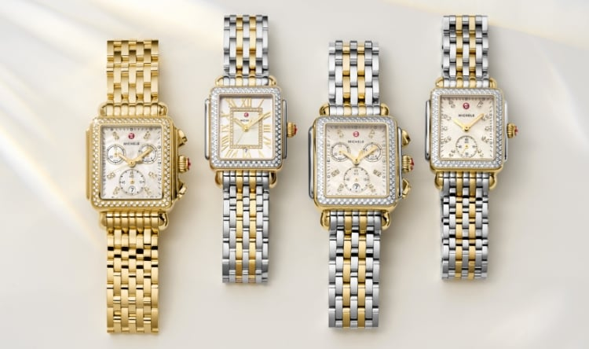
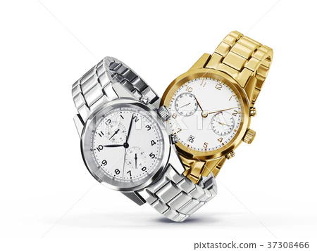
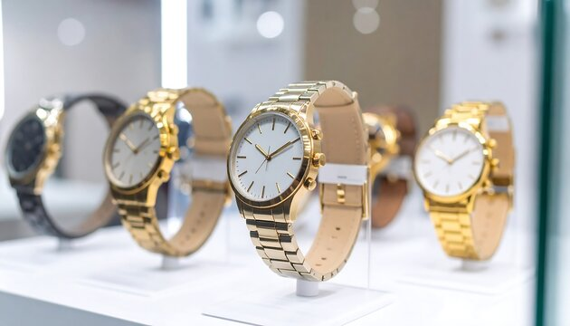

Welcome to TimeVerse, a digital showcase of classic and modern timepieces. Whether you’re a collector, a fashion enthusiast, or someone looking for the perfect everyday watch, TimeVerse brings you a curated collection of the finest watches.
Our mission is to explore the art and technology behind watchmaking. From automatic movements to smartwatch innovations, TimeVerse covers it all.
Here’s what you can explore:


